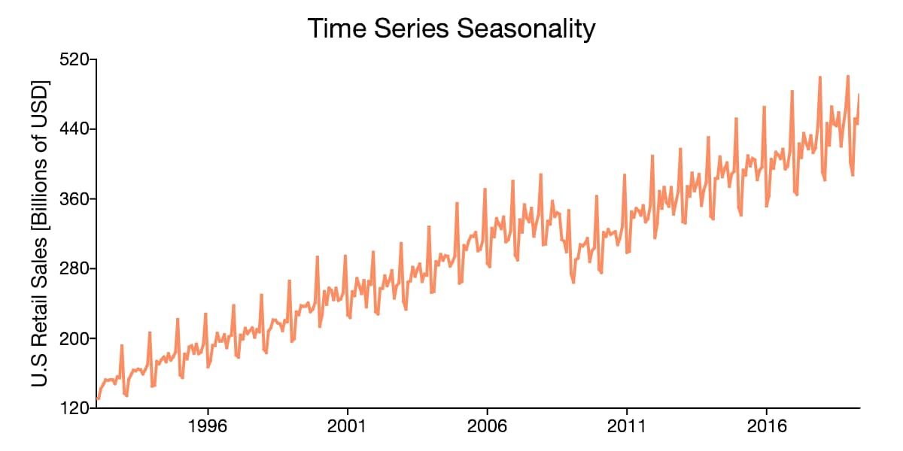

Time Series
What is Time Series?

Any metric that is measured over regular time intervals makes a Time Series.
- Example: Weather data, Stock prices, Industry forecasts, etc are some of the common ones.
The analysis of experimental data that have been observed at different points in time leads to new and unique problems in statistical modeling and inference.
The obvious correlation introduced by the sampling of adjacent points in time can severely restrict the applicability of the many conventional statistical methods traditionally dependent on the assumption that these adjacent observations are independent and identically distributed.